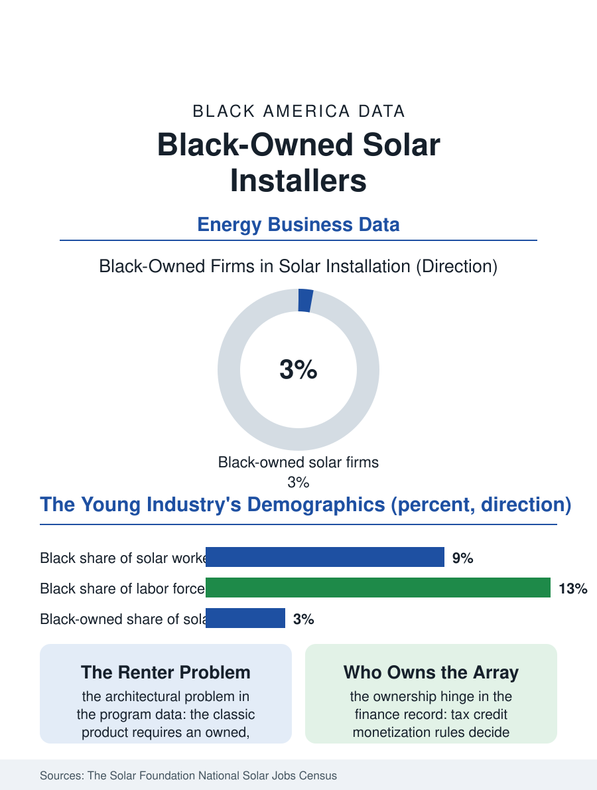

Black Business
Sunlight and Ownership: Black-Owned Solar Installers
Solar is a policy-built industry whose workforce and ownership demographics report on who policy reaches, and Black firms hold a small share of its young market. The solar file.

Rooftop solar has grown from a subsidy curiosity into a mainstream construction segment, and its installation workforce and firm ownership are being counted as they form. Black-owned solar installers hold a very small share of the industry's firms in the energy surveys, and Black workers hold a modest share of installation jobs, in the one construction segment whose entire market is a policy creation, which makes its demographics a direct report on who policy reaches. This article reads the solar file.
An Industry Designed on Paper
Unlike the old trades in this atlas, solar installation was substantially designed by legislation: the federal investment tax credit, state renewable standards, and net metering rules created the demand, and the industry's geography, California, the Southwest, the Northeast corridor, Texas rising, follows those policies state by state. The Solar Foundation's annual jobs census and diversity studies supply the file's numbers: solar employed on the order of a quarter-million workers in recent counts, with Black workers at roughly eight or nine percent of the workforce, below their labor force share, and Black-owned firms a low single-digit share of installers, concentrated in the community solar and residential segments. The workforce's entry structure differs from the licensed trades: installation draws on roofing and electrical crews, requires shorter training, and pays entry wages near construction's floor, with the wage ladder running through the licensed electrician who must sign off the interconnection, which imports the electrician file's demographics into solar's summit. The industry's growth rate forgives many sins and compounds others: each year's installations set the base for the maintenance and repowering economy, and the firms that own customer relationships in the first build-out hold the asset the next decade services.
Community Solar and the Renter Problem
Solar's central equity problem is architectural: the classic product bolts to a roof the customer owns, in a country where Black households rent at the atlas's documented rates and where Black homeowners' roofs skew older, in the housing stock least able to host panels without repair the installer will not fund. Community solar, subscriptions to shared arrays, was engineered against exactly this exclusion, and its subscription data are the file's most hopeful page: programs with deliberate low-income carve-outs in several states enroll Black households at meaningful rates, with the savings, typically a discount on the electric bill, arriving without a roof, a credit score worthy of a loan, or a twenty-year tenure. Black-owned firms have been disproportionately active in this segment's development, community-rooted developers and installers building the projects whose subscription bases are their own neighborhoods, a pattern the energy justice literature now documents as a sector. The counterweights are the industry's financial architecture: solar lending and leases have their own consumer file, contracts whose terms have drawn regulatory scrutiny in precisely the low-income markets the equity programs target, so the community segment's growth depends on the boring machinery of consumer protection and project finance access, the tax credit monetization rules that decide whether a Black developer can finance an array without selling the project, and with it the ownership, to the established energy firms.
The Workforce the Transition Promised
Solar is the test case of the energy transition's jobs promise, and its demographics are therefore read, fairly, as the promise's first grade. The training responses are the trades file's standard instruments, aimed at a faster-moving target: pre-apprenticeship programs run by community organizations, IBEW and contractor solar academies, and manufacturer training for the battery and inverter layer that is becoming the industry's skilled core as storage attaches to nearly every new system. Storage is quietly repricing the whole ladder: the battery installer services what she installs, the maintenance tail lengthens, and firm value migrates toward the service book, the HVAC pattern repeating in a younger industry. The policy calendar governs all of it, credit schedules phasing, state programs opening and closing, so the workforce the industry trains is trained against a moving legislative horizon, and the firms and workers with the least cushion, the Black entrants latest to the field, absorb the calendar's shocks first. The solar file closes on a rooftop at noon, the product working in silence above a household whose bill is falling. The technology democratizes beautifully; electrons do not check credit. Whether the industry built to deliver it democratizes as well is a question the next census of solar jobs will answer in the only language this atlas trusts, the counts, and the counts so far describe an industry growing faster than its inclusion, with the community segment, where Black firms are strongest, holding the design that could still change the totals.
More in Black Business
Black-Owned Businesses: Counts, Receipts, and the Representation Gap
About 161,000 Black-owned employer firms and three million solo ventures: how the Census Bureau counts Black business ownership, where firms concentrate, and the gap between population share and business share.
Black Median Net Worth: The Wealth Gap in Federal Reserve Data
The Federal Reserve puts Black median family net worth at $44,900, against $285,000 for White families — about 16 cents on the dollar. The widest gap in economic data.
Black Buying Power: The $1.8 Trillion Consumer Economy
Black buying power is estimated at about $1.8 trillion — larger than the economy of most nations. What the figure measures, who produces it, and what it buys.
Source: The Solar Foundation, National Solar Jobs Census and solar industry diversity reports; U.S. Census Bureau, Annual Business Survey.